Point-in-time captures from 21 sources that do not keep their own history. Each capture stores the bytes as served, with a manifest row recording the URL, fetch time and SHA-256.
History held: 2026-09-02 to 2026-09-22.
Figures are rebuilt from the derived tables on every run; each one names the entities it is about so it can be acted on without a further query.
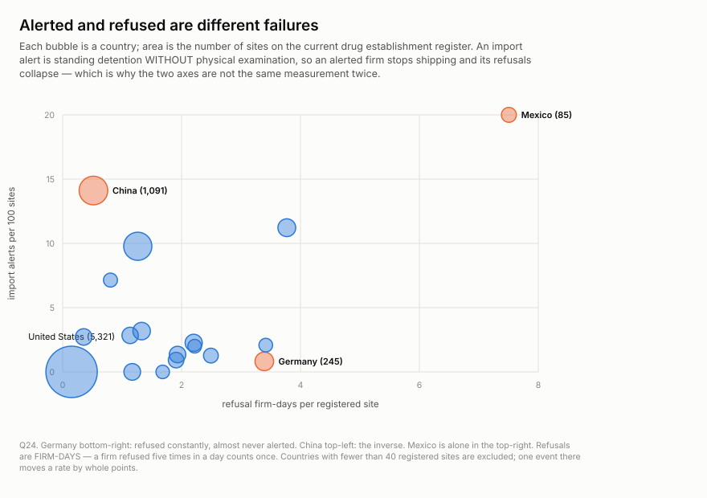
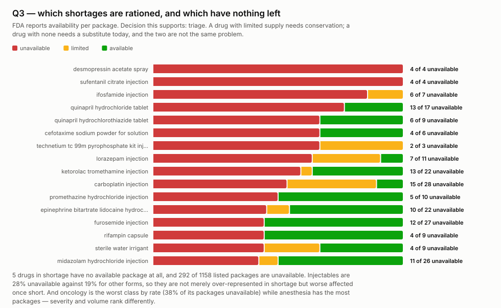
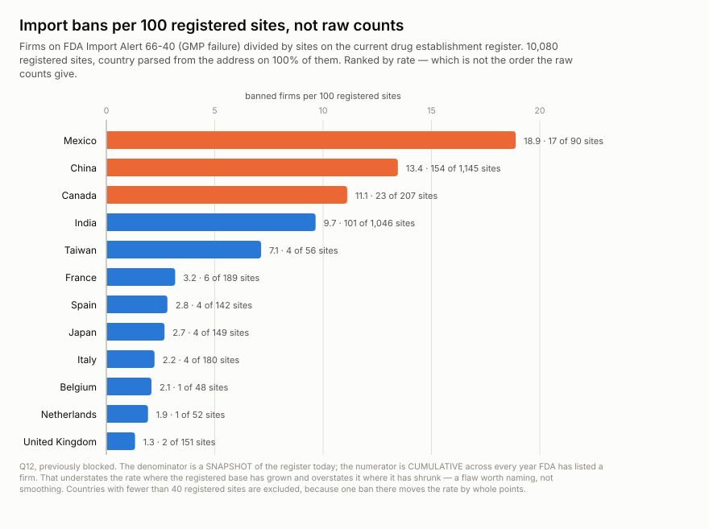
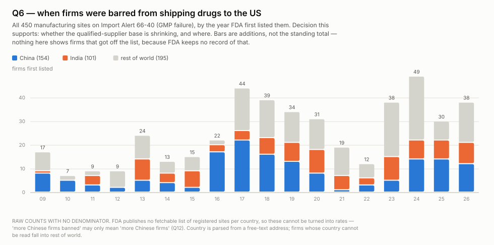
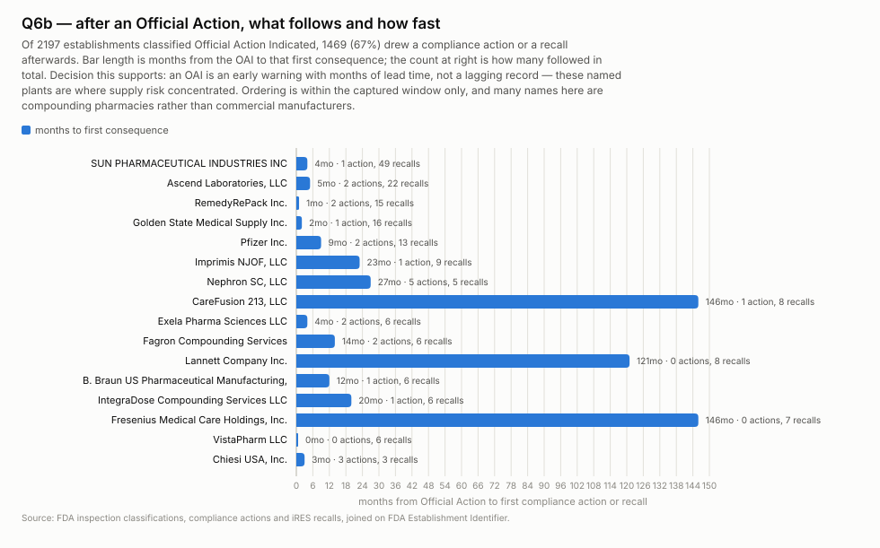
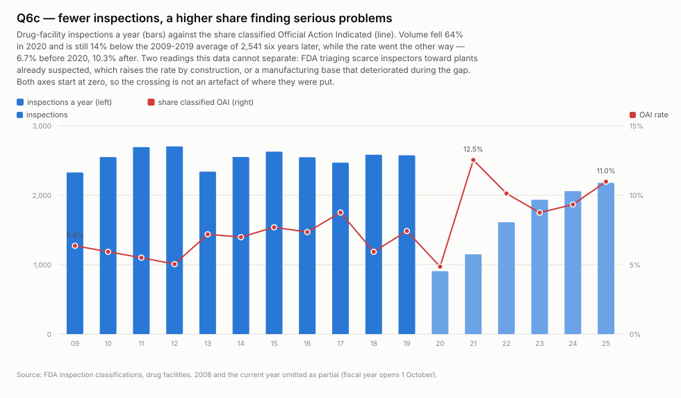
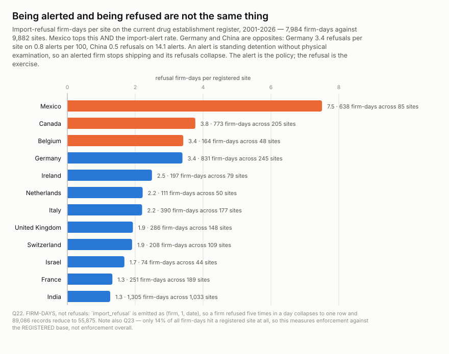
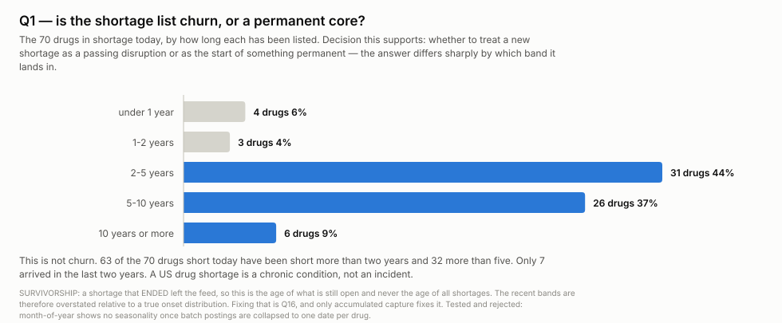
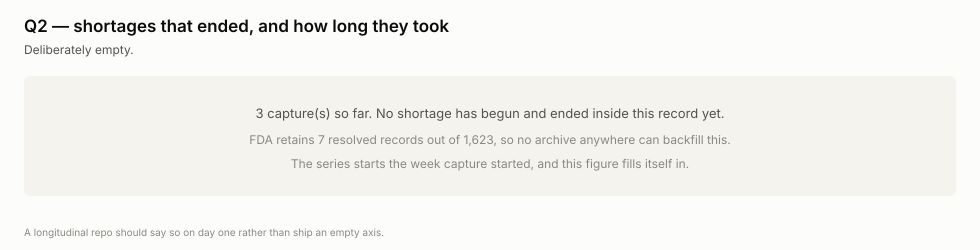
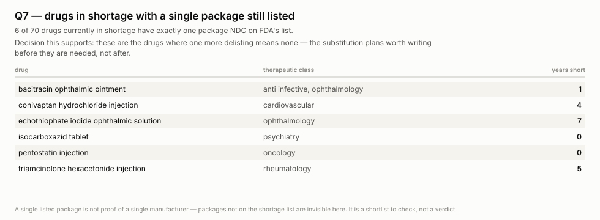
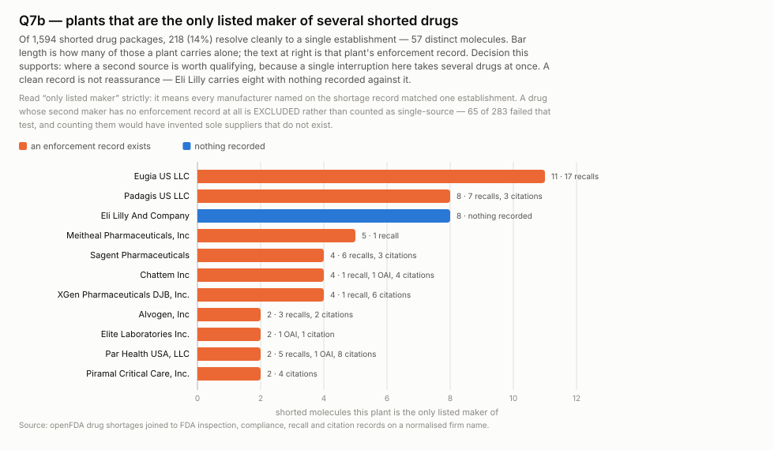
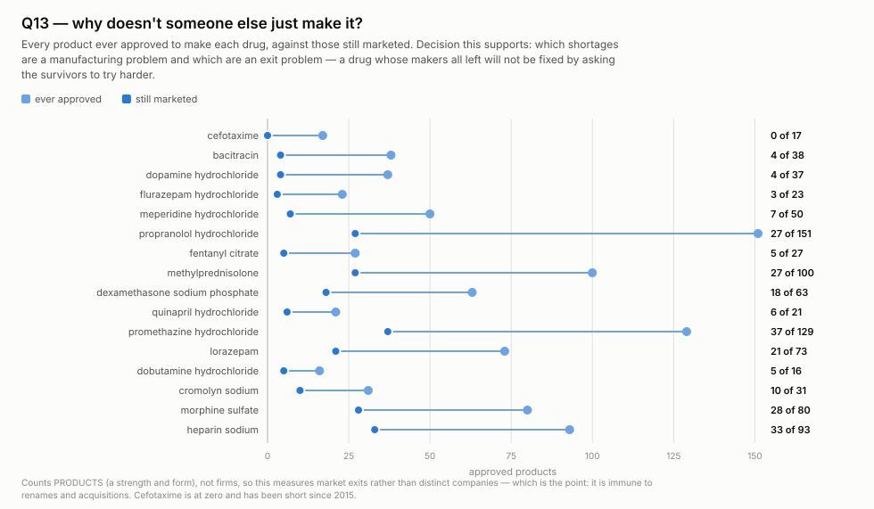
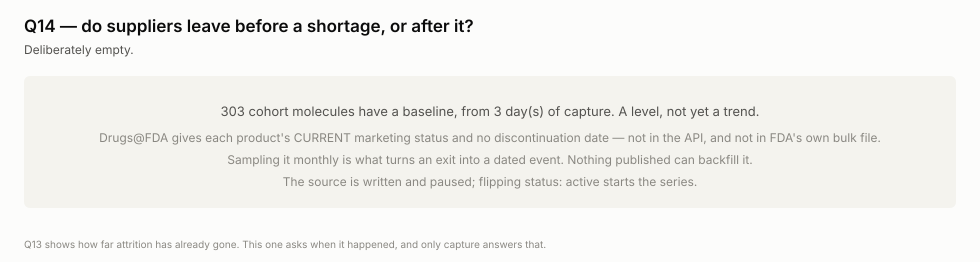
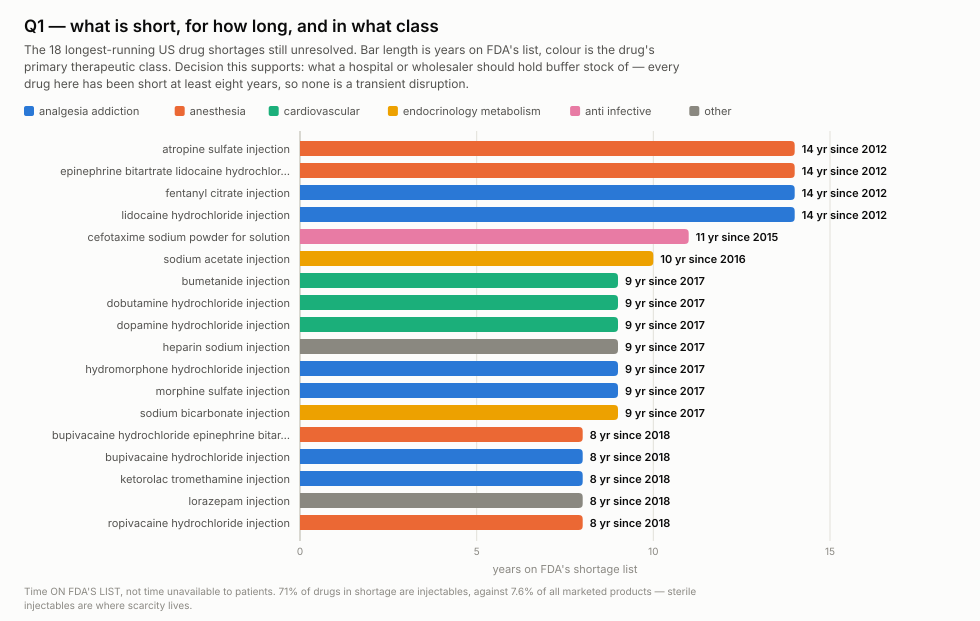
| source | publisher | cadence | terms |
|---|---|---|---|
ansm.shortages.fr | Agence nationale de sécurité du médicament (France) | weekly | ANSM public information; see https://ansm.sante.fr/page/documents-administratifs-mis-a-la-disposition-du-public |
fda.citations.drugs | US Food and Drug Administration | weekly | US federal work, no copyright in the US |
fda.citations.history | US Food and Drug Administration | quarterly | US federal work, no copyright in the US |
fda.complianceactions.drugs | US Food and Drug Administration | weekly | US federal work, no copyright in the US |
fda.decrs.excluded | FDA CDER — Drug Establishments Current Registration Site | monthly | US federal government work, public domain |
fda.decrs.registrations | FDA CDER — Drug Establishments Current Registration Site | monthly | US federal government work, public domain |
fda.devices.shortages | US Food and Drug Administration (CDRH) | weekly | US federal work, no copyright in the US |
fda.drugsfda.cohort-status | US Food and Drug Administration | monthly | US federal work, no copyright in the US; https://open.fda.gov/terms/ |
fda.importalert.66-40 | US Food and Drug Administration | weekly | US federal work, no copyright in the US |
fda.importalert.66-41 | US Food and Drug Administration | monthly | US federal work, no copyright in the US |
fda.importrefusals.recent | US Food and Drug Administration | weekly | US federal work, no copyright in the US |
fda.inspections.drugs | US Food and Drug Administration | weekly | US federal work, no copyright in the US |
fda.inspections.history | US Food and Drug Administration | quarterly | US federal work, no copyright in the US |
fda.outsourcing.facilities | US Food and Drug Administration (CDER) | monthly | US federal work, no copyright in the US |
fda.productcodes.reference | US Food and Drug Administration | monthly | US federal work, no copyright in the US |
fda.recalls.cder | US Food and Drug Administration | weekly | US federal work, no copyright in the US |
fda.refusals.backfill | US Food and Drug Administration | quarterly | US federal work, no copyright in the US |
fda.rems.approved | US Food and Drug Administration (CDER) | monthly | US federal work, no copyright in the US |
fda.shortages.current | US Food and Drug Administration | weekly | US federal work, no copyright in the US; https://open.fda.gov/terms/ |
ie.hpra.products | Health Products Regulatory Authority (Ireland) | monthly | unstated on hpra.ie; robots.txt permits and names no agent (checked 2026-09-17) |
tga.shortages.au | Therapeutic Goods Administration (Australia) | weekly | Australian Government (TGA); site content CC BY 4.0 unless marked — https://www.tga.gov.au/copyright |
Derived tables are CSV under data/ in
the repository; the bytes they came from are under
raw/, and SOURCES.md lists every source URL.
Every observation carries source_id and raw_ref. The
matching manifest row holds that raw_ref with the URL, the fetch
timestamp and a SHA-256 of exactly what came back, so any number here traces to
the bytes it came from.
Cite this dataset by its repository and the date you took it from: https://github.com/q3dresearch/wss-drug-scarcity, accessed 2026-09-22.